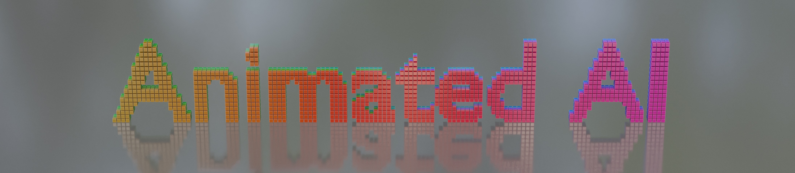

I'm creating animations and instructional videos about neural networks.
Check out my
YouTube channel!
Convolution
The Basic Algorithm
Watch the companion YouTube video: Fundamental Algorithm of Convolution in Neural Networks.

Padding
Companion video: Convolution Padding - Neural Networks
|
 |
| No Padding AKA "Valid" |
[1,1,1,1] Padding AKA "Same" |
Stride
Companion video: Stride - Convolution in Neural Networks
| Stride 1 | Stride 2 |
|---|
|
 |
| No Padding AKA "Valid"; Stride of 1 |
No Padding AKA "Valid"; Stride of 2 |
|
 |
| [1,1,1,1] Padding AKA "Same"; Stride of 1 |
[1,1,1,1] Padding AKA "Same"; Stride of 2 |
Groups, Depthwise, and Depthwise-Separable
|
 |
| 1 Group |
2 Groups |
 |
 |
| Depthwise (8 Groups) |
Depthwise-separable (8 Groups followed by pointwise) |
Licensed under the
MIT License